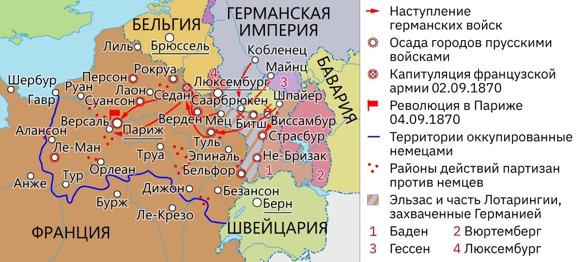
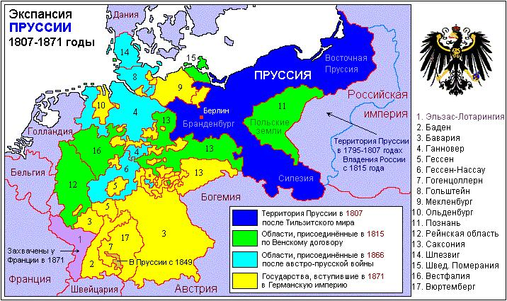
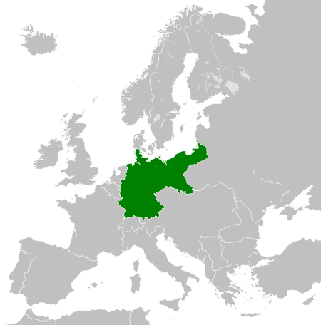
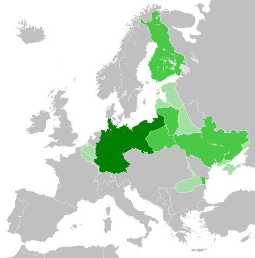
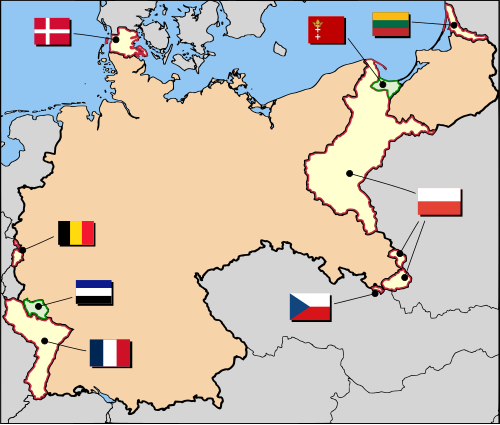

Во второй половине XIX века идея объединения немецких земель под единым государственным руководством стала одной из центральных в европейской политике. После наполеоновских войн Германия оставалась раздробленной: на её территории существовало множество королевств, герцогств и вольных городов, объединённых в Германский союз, где формально главенствовала Австрия. Однако постепенно Пруссия усиливала своё влияние и стремилась возглавить процесс объединения.
Главным архитектором объединения стал Отто фон Бисмарк, назначенный в 1862 году министром-президентом Пруссии. Его политика, получившая название «политика железа и крови», основывалась на убеждении, что судьба Германии решится не речами и голосованиями, а военной силой. Бисмарк использовал войны и дипломатические манёвры, чтобы достичь цели — объединения немецких земель под прусским руководством.
После победы Пруссии над Австрией в 1866 году был создан Северогерманский союз, в который вошли северные германские государства. Южные монархии — Бавария, Вюртемберг, Баден и Гессен-Дармштадт — сохранили независимость, но разделяли с Пруссией экономические интересы. Для окончательного объединения требовался внешний враг, способный сплотить немцев.
Поводом для конфликта стала кандидатура прусского принца Леопольда Гогенцоллерна на испанский престол. Франция, опасавшаяся окружения державами под влиянием Пруссии, потребовала отказаться от выдвижения этой кандидатуры. После отказа Бисмарк опубликовал отредактированный текст Эмсской депеши, придав ему оскорбительный характер для Франции. 19 июля 1870 года император Наполеон III объявил Пруссии войну.
С самого начала германские войска под командованием Гельмута фон Мольтке продемонстрировали превосходство в организации и стратегии. Благодаря развитой железнодорожной сети Пруссия быстро мобилизовала армию и нанесла серию поражений французам. Победы при Вёрте и Шпихерне (6 августа 1870 г.) открыли путь вглубь Франции. Решающее сражение произошло при Седане 1–2 сентября 1870 года: французская армия во главе с маршалом Мак-Магоном капитулировала, а сам Наполеон III попал в плен.
После Седана германские войска осадили Париж. Город пал 28 января 1871 года. Согласно Франкфуртскому мирному договору от 10 мая 1871 года, Франция уступала Германии Эльзас и часть Лотарингии, выплачивала контрибуцию в 5 миллиардов франков и соглашалась на временную оккупацию части своей территории.
18 января 1871 года в Зеркальном зале Версальского дворца, в присутствии германских князей и генералов, король Пруссии Вильгельм I был провозглашён императором (кайзером) Германии. Этот акт ознаменовал завершение процесса объединения немецких земель под властью Пруссии и рождение Германской империи (Deutsches Kaiserreich).
Новая империя представляла собой федерацию, включавшую 22 монархии и 3 вольных города — Гамбург, Бремен и Любек. Столицей стал Берлин. Первым рейхсканцлером был назначен Отто фон Бисмарк. Пруссия сохраняла ведущие позиции, контролируя большую часть территории, армии и населения страны.
Объединение Германии стало поворотным моментом в истории Европы. Германия быстро превратилась в мощную индустриальную и военную державу. Победа над Францией нарушила прежний баланс сил: Франция утратила статус ведущей державы, а между двумя странами установилось длительное соперничество, главным образом из-за Эльзаса и Лотарингии.


После провозглашения Германской империи в 1871 году страна пережила стремительный экономический подъем. В течение нескольких десятилетий Германия превратилась из преимущественно аграрной державы в мощную индустриальную страну, сопоставимую по экономическому потенциалу с Великобританией и Францией. Этот период стал временем расцвета науки, промышленности и банковской системы.
В основе экономического могущества Германии лежала тяжёлая промышленность. Особое значение имели угольные и железорудные месторождения Рура, Саара и Верхней Силезии. Крупнейшие компании, такие как Krupp, Thyssen, Hoesch и Mannesmann, выпускали сталь, вооружение и оборудование для железных дорог. Германия стала ведущим производителем стали в Европе, обогнав даже Великобританию.
| Год | Германия | Великобритания | Франция |
|---|---|---|---|
| 1871 | 1,3 | 6,0 | 1,1 |
| 1900 | 8,5 | 5,0 | 1,6 |
| 1913 | 19,3 | 7,7 | 4,6 |
Рост металлургии сопровождался развитием машиностроения и химической промышленности. Немецкие фирмы BASF, Bayer и Hoechst стали мировыми лидерами в производстве красителей, удобрений и медикаментов. К 1913 году Германия контролировала около 80% мирового производства анилиновых красителей.
Энергетической основой промышленности стал уголь. Рурский и Саарский бассейны обеспечивали не только внутренние потребности, но и экспорт. Активно развивалась добыча бурого угля, применявшегося в энергетике.
| Год | Германия | Великобритания | Франция |
|---|---|---|---|
| 1871 | 30 | 110 | 15 |
| 1900 | 150 | 225 | 35 |
| 1913 | 280 | 287 | 45 |
Благодаря бурному росту добычи угля и развитию электроэнергетики Германия стала одной из первых стран, где электричество использовалось не только в промышленности, но и в быту. Компании Siemens и AEG внесли огромный вклад в развитие электротехники и телеграфной связи.
Развитие промышленности опиралось на мощную банковскую систему. Банки Deutsche Bank, Dresdner Bank и Commerzbank финансировали крупные предприятия и железнодорожное строительство. Германия стала одним из центров международного кредита. В отличие от Великобритании, где банки в основном занимались торговыми операциями, немецкие активно инвестировали в промышленность, что ускорило экономическое развитие страны.
| Год | Германия | Великобритания | Франция |
|---|---|---|---|
| 1870 | 8,5 | 22,9 | 13,3 |
| 1900 | 13,2 | 18,5 | 8,5 |
| 1913 | 14,8 | 13,6 | 7,0 |
В начале XX века Германия начала активно развивать военно-морской флот, стремясь догнать Великобританию, которая традиционно контролировала моря. Программа строительства линкоров типа "Дредноут", начатая при кайзере Вильгельме II, вызвала напряжённость между странами и породила гонку вооружений.
| Страна | Число линкоров | Число крейсеров | Общая тоннажность (тыс. тонн) |
|---|---|---|---|
| Великобритания | 29 | 115 | 2 100 |
| Германия | 17 | 55 | 1 000 |
| Франция | 10 | 40 | 700 |
Германия активно включилась в колониальную гонку, стремясь получить доступ к сырьевым ресурсам и рынкам сбыта. К 1914 году под её контролем находились обширные территории в Африке — Германская Восточная Африка, Юго-Западная Африка, Того и Камерун, а также владения в Тихом океане. Несмотря на более позднее вступление в колониальную борьбу, Германия быстро создала эффективную колониальную администрацию и активно экспортировала товары в свои владения.
Германия стала мировым лидером в научных исследованиях и техническом образовании. Университеты Берлина, Мюнхена и Гейдельберга, а также технические высшие школы формировали квалифицированные кадры для промышленности. Открытия в области химии, физики и машиностроения способствовали инновациям и укреплению национальной экономики.
К началу Первой мировой войны Германия превратилась в крупнейшую индустриальную державу Европы, уступая по объёму промышленного производства лишь США. Высокий уровень организации, научные достижения и развитая инфраструктура сделали Германскую империю одной из самых могущественных экономик мира. Однако её стремление к господству на мировых рынках и борьба за колонии усилили международное напряжение, став одной из причин конфликта 1914 года.
Начало XX века стало временем роста напряжённости между великими державами Европы. Германия, стремившаяся утвердить себя в качестве мировой державы и добиться колониального влияния, всё чаще вступала в противоречия с Францией, Великобританией и Россией. Эти конфликты привели к крупнейшему военному столкновению начала XX века — Первой мировой войне, которую современники называли Великой войной.
После убийства австрийского эрцгерцога Франца Фердинанда в Сараево летом 1914 года Германия встала на сторону своего союзника — Австро-Венгрии, поддержав её против Сербии. Это вызвало цепную реакцию: Россия объявила мобилизацию, Германия — войну России и Франции, а Великобритания вступила в конфликт после нарушения Германией нейтралитета Бельгии. Таким образом, локальный кризис превратился в мировую войну.
Немецкое командование рассчитывало быстро разгромить Францию по так называемому плану Шлиффена — молниеносному удару через территорию Бельгии с целью окружить французскую армию и захватить Париж. Однако уже в сентябре 1914 года германское наступление было остановлено в битве на Марне. Война приобрела позиционный характер: фронты стабилизировались, а боевые действия затянулись на годы.
В начале конфликта Германия

В 1916–1917 годах, когда страна достигла
пика её континентальной экспансии

Однако положение Германии постепенно ухудшалось. Блокада со стороны британского флота вызвала нехватку продовольствия и сырья. В 1917 году в войну вступили Соединённые Штаты Америки, усилив позиции Антанты. Несмотря на временные успехи на Западном фронте весной 1918 года, германское наступление захлебнулось из-за истощения людских и материальных ресурсов.
К осени 1918 года германская армия начала отступать по всему фронту. Внутри страны нарастало недовольство войной, голодом и авторитарным режимом. В ноябре 1918 года вспыхнула революция, которая привела к отречению кайзера Вильгельма II и провозглашению Веймарской республики. 11 ноября Германия подписала Компьенское перемирие, фактически завершившее войну.
В результате поражения Германия потеряла колонии,
часть территорий, включая Эльзас и Лотарингию,
